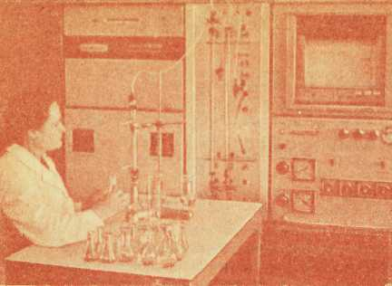

Источник незаменимых аминокислот

Роль белка в жизни общеизвестна. Он является главной составной частью каждого живого организма и каждой его клетки (составляет 1/5 часть человеческого тела). Основные проявления жизни — обмен веществ, способность к росту, размножению — связаны с белком. Ферменты — удивительные ускорители всех без исключения химических превращений в организме, многие гормоны — регуляторы обменных процессов — это те же белки.
Человеку необходимо в сутки в среднем 80—100 г белка.
Недостаток белка в пище приводит к тяжелым последствиям — расстройству здоровья, серьезным заболеваниям. Значительная часть населения Земли страдает от недостатка белковой пищи, и усилия ученых направлены на то, чтобы определить наиболее эффективные пути увеличения ее ресурсов, изыскать дополнительные источники белка, в том числе микробиологического происхождения, создать синтетические аминокислоты.
Белки имеются во всех природных продуктах — мясе, рыбе, молоке и молочных продуктах, яйцах, хлебе, картофеле, фасоли, сое, горохе и др. Среди этих продуктов сыр по содержанию белка стоит на одном из первых мест. Из растительных продуктов наиболее богаты белком бобовые — соя, горох, фасоль. Но дело не столько в количестве белка, сколько в его пищевой ценности.
Пищевая ценность белков различных продуктов неодинакова. Она зависит от состава аминокислот, из которых построен тот или иной белок.
Природный белок содержит 20 аминокислот, в том числе 8 незаменимых, их не может синтезировать ни организм человека, ни организм животного, они должны поступать с пищей в определенных количествах. Аминокислоты, образно говоря, — кирпичики, из которых организм строит свои белки. Каждая из незаменимых аминокислот играет роль в сложных процессах жизни.
Белки молока обладают хорошим аминокислотным составом. Сыр как молочный продукт является источником незаменимых аминокислот, в том числе наиболее дефицитных — триптофана, лизина и метионина.

С помощью аминокислотного анализатора ученые-сыроделы определяют содержание аминокислот в сыре
Маир-Валдбург в своей книге «Справочник по сырам»[4] приводит данные о том, что при потреблении 100 г сыра (швейцарского) покрывается минимальная суточная потребность человека в незаменимых аминокислотах. Для получения рекомендуемого количества аминокислот дозу потребления сыра надо удвоить.
Для организма наиболее полезны те белки, которые по содержанию аминокислот подобны белкам тканей и органов человека. И белок сыра в основном отвечает этим требованиям. Больше того, он обладает способностью обогащать аминокислотный состав белков другой пищи. Так, при употреблении бутерброда с сыром невысока», пищевая ценность белка хлеба повышается.